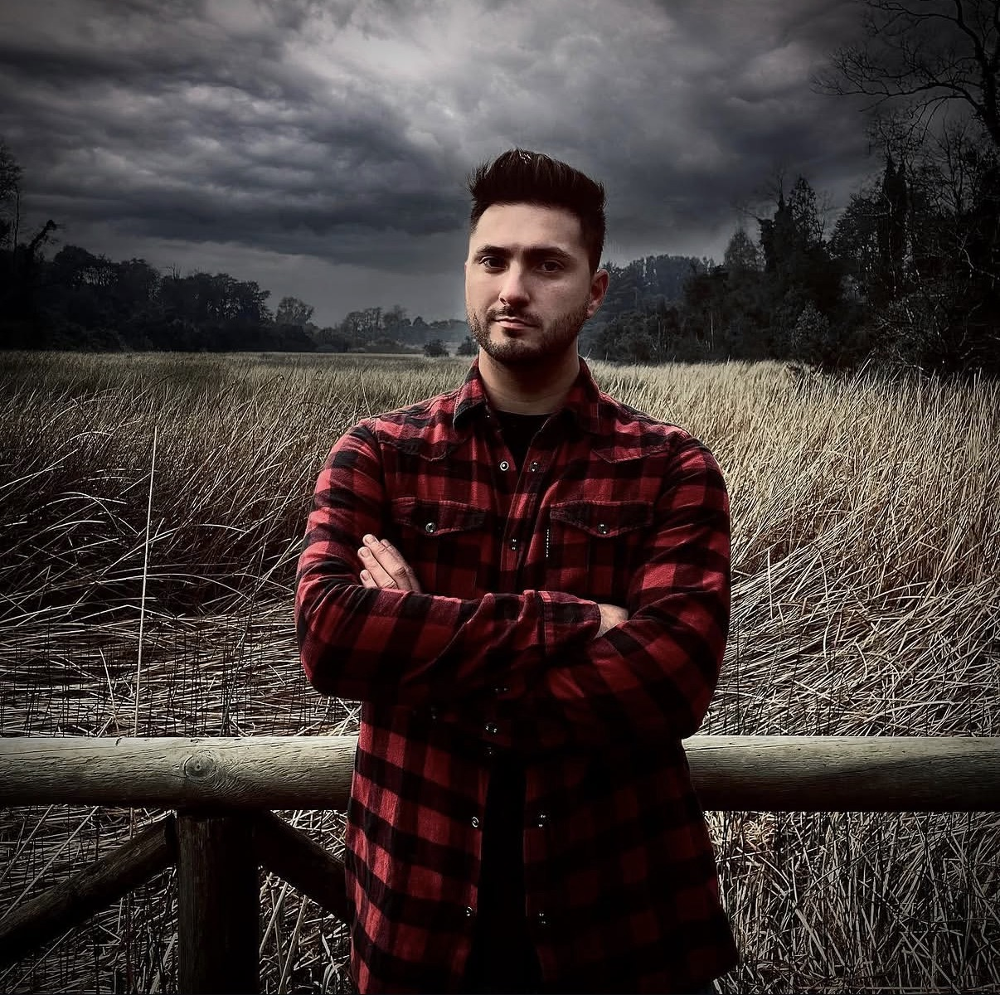

Disponible para Nuevos Desafíos
Precisión Técnica.
Visión Estratégica.
Estratega con formación dual: integra la precisión técnica de un Técnico Electrónico con la visión directiva de un Ingeniero en Marketing.

Matriz de Competencias
Liderazgo operativo orientado a resultados.
leaderboard
Gestión Basada en Datos
Transformación de data operativa en estrategias comerciales. Optimización de KPIs con rigor analítico.
precision_manufacturing
Excelencia Técnica
Base sólida en hardware que garantiza control de calidad en terreno.
Trayectoria Profesional
Evolución constante y compromiso con la excelencia operativa.
Recinto Protegido
Septiembre 2025 – Actualidad
Jefe Técnico de Operaciones
- • Liderazgo estratégico del área de operaciones, enfocado en la capacitación y mejora continua de las competencias del equipo técnico interno.
- • Gestión y búsqueda activa de instaladores a nivel nacional para asegurar la cobertura técnica y operativa en todas las regiones de Chile.
- • Diseño y supervisión de la implementación de proyectos de seguridad crítica, incluyendo servicios de monitoreo de cámaras de última generación.
- • Implementación de soluciones tecnológicas avanzadas mediante el uso de fibra óptica y sistemas autosustentables con paneles solares.
SMA
Año 2025 (4 meses)
Supervisor de Instalaciones y Proyecto
- • Supervisión técnica en terreno de equipos técnicos, garantizando la correcta ejecución de instalaciones y el cumplimiento de estándares de calidad.
- • Gestión integral de proyectos basada en el levantamiento de requerimientos específicos del cliente.
- • Responsable de la cuantificación técnica de elementos y selección de hardware de alta gama, trabajando con marcas líderes como Dahua y sistemas de alarmas DSC.
SLAM
2021 – 2024
Técnico Supervisor
- • Dirección de equipos especializados en instalación, mantenimiento y reparación de redes inalámbricas, cableado estructurado, CCTV y automatización.
- • Elaboración de informes técnicos de gestión para documentar soluciones, indicencias y optimización de proyectos.
¿Listo para el siguiente nivel?
call +56 9 77333465
mail mauricio.baez.bascour@gmail.com
Santiago, Chile
Disponible para asesorías técnicas y gestión de proyectos de seguridad industrial de alta complejidad.
Contactar por WhatsApp